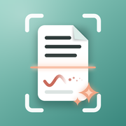

Privacy Policy
Last updated: October 11, 2026
This policy explains what the Smart Scan app ("the app", "we") collects and why. In short: your documents never leave your device unless you share them yourself; we collect a small amount of technical device information to keep the app working and to send notifications.
Your documents and photos
- Photos you scan or pick, and the documents made from them, are processed on your device. They are not uploaded to our servers.
- They are stored in the app's private storage on your device until you delete them or remove the app.
- When you share or export a document, it goes only to the app or person you choose.
- The app asks for camera access to scan, and for photo library access only when you pick photos or save images.
Technical information we collect
When the app starts, it stores one record per device in Google Firebase Cloud Firestore containing:
- a device identifier (Android ID on Android, identifierForVendor on iOS),
- device model, operating system version and whether it is a physical device,
- app version, the app language you chose, and your device's language, region and time zone,
- a Firebase Cloud Messaging token, used to deliver notifications to the app.
We use this to understand which devices and languages to support and to send notifications. It does not include your name, contacts, location or document contents.
Crash reports
If the app crashes, Firebase Crashlytics sends a crash report (stack trace, device model, OS version, app version and the device identifier above) so we can fix the problem.
Notifications
The app may ask for permission to show notifications. You can turn notifications off at any time in your device settings.
Third-party services
The app uses Google Firebase (Cloud Firestore, Cloud Messaging, Crashlytics), operated by Google, to process the information above. See Firebase privacy and security. The app does not show ads and does not sell your data.
Data retention and deletion
Documents are deleted when you delete them in the app or uninstall it. To ask us to delete the technical record for your device, open a support request and include the app version and device model.
Children
The app is a general-purpose document tool and does not knowingly collect personal information from children.
Changes
We may update this policy; the date at the top shows the latest version.
Contact
Questions about this policy: open a support request.